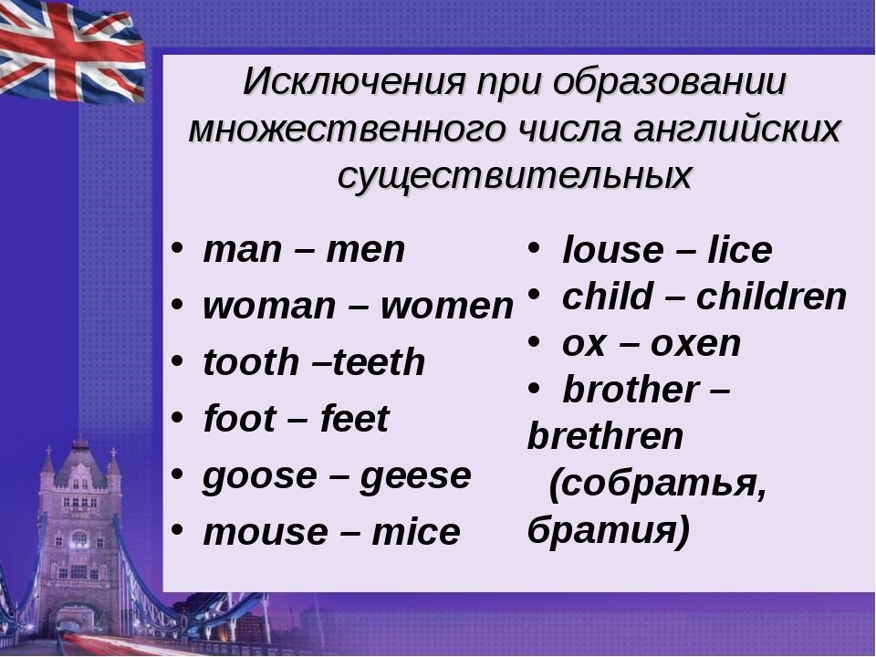

Английские существительные
Число существительных
Исчисляемые существительные
Исчисляемые существительные (Countable Nouns) указывают на одушевленные и неодушевленные объекты, а также понятия, которые можно посчитать. Данные существительные имеют форму множественного числа, которая в большинстве случаев образуется с помощью добавления окончания -s, если у этого существительного нет формы неправильного множественного числа (Irregular plural nouns).
a dog – собака/two dogs – две собаки
a pupil – ученик/ten pupils – десять учеников
a man – мужчина/six men – шесть мужчин

Исчисляемые существительные разделяются на конкретные (concrete) - реальные предметы, живые существа, и абстрактные (abstract) - абстракции, понятия, чувства.
конкретный предмет, особь
a building – здание
a girl – девочка
a pen – ручка
абстрактное понятие
a problem – проблема (абстр.)
a feeling – чувство
an invitation – приглашение
Неисчисляемые существительные
Неисчисляемые существительные (Uncountable Nouns) не поддаются счету и не имеют формы множественного числа. Они разделяются на абстрактные (abstract nouns) неисчисляемые понятия и вещественные (material nouns): названия материалов, жидкостей, веществ.
абстрактные существ.
music – музыка
love – любовь
information – информация
вещественные существ.
water – вода
cotton – хлопок, вата
iron – железо
Иногда неисчисляемые существительные в зависимости от их значения могут принимать форму множественного числа. Во множественном числе они указывают на различные виды предмета, или количество емкостей для них.
Coffee makes me alive every morning. – Кофе оживляет меня каждое утро (кофе как жидкость)
Two coffees, please! – Два кофе, пожалуйста! (2 чашки кофе)
Iron is a type of metal. – Железо - это тип металла.
All my irons are broken. I have to buy a new one. – Все мои утюги сломаны. Мне нужно купить новый.
Собирательные существительные
Собирательные существительные (Collective Nouns) указывают на группы, собрания одушевленных и неодушевленных объектов. Часто собирательные существительные указывают именно на группы людей и животных.
family – семья
class – класс
crowd – толпа
set – набор
В зависимости от контекста собирательные существительные в предложениях могут использоваться как существительные в единственном, так и в множественном числе.
Единственное число указывает на то, что группа предметов или лиц действует как одно целое. Множественное число указывает на то, что члены, участники определенной группы, собрания действуют отдельно друг от друга.
Every week this class has a math test. – Каждую неделю этот класс пишет тест по математике (все ученики класса вместе)
After every test the class start to chat with each other or do their hometasks. – После каждого теста в классе начинают разговаривать друг с другом или делать домашнюю работу. (ученики класса действуют отдельно)
The committee adopts this decision with a solid vote. – Комитет единогласно принимает это решение.
It is hard to adopt any decision because the committee constantly argue about something. – Сложно принимать любое решение, так как члены комитета непрерывно о чем-то спорят.